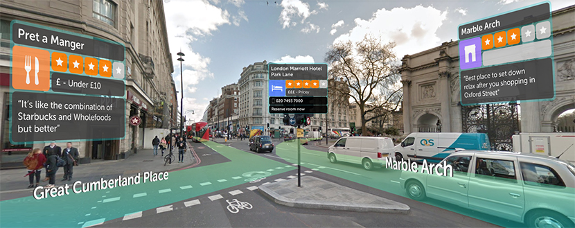

I would like to showcase Blippar's urban visual positioning system. This system is designed to power the new generation of location-based AR, which requires precise pose estimation to overlay complex virtual content onto physical shops, tourist attractions and any other point of interest in our cities. This system uses the combination of GPS and computer vision algorithms to locate the user in the urban setting with the location error of few metres. The accuracy of Urban Visual Positioning System can take location based AR to new levels of engagement. An example would be virtual departure boards in front of train stations, interactive guides in front of famous landmarks, or even a virtual menu hanging on the wall of a restaurant. Please refer the image below for an example:
